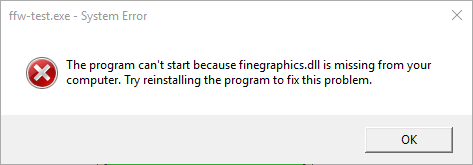

Now compile it and run it! You might see the following message:

This is where DLL files comes...
For the Debug, simply copy all DLL and PDB files with '_d' suffix from C:\path\to\ffw-win32-vc12\bin into C:\Path\To\Your\Project Folder\Debug (this folder contains your executable file!)
For the Release, simply copy all DLL (with NO '_d' suffix!) from C:\path\to\ffw-win32-vc12\bin into C:\Path\To\Your\Project Folder\Release (this folder contains your executable file!)
Alternatively (not recommended!) you can put all DLLs and PDBs files (Debug and Release) into your Visual Studio bin folder located here: C:\Program Files (x86)\Microsoft Visual Studio 12.0\VC\bin In this case, you won't need to copy DLLs every time you create a new FFW project, unless you are running your application outside of Visual Studio.
When done, try to run the example again. This should show up:

public:
App(){
}
~App(){
}
std::cout << "Window setup!" << std::endl;
return true;
}
}
std::cout << "Window is closing!" << std::endl;
}
}
std::cout << "Key pressed: " << key << std::endl;
}
std::cout << "Mouse moved to: " << mousex << "x" << mousey << std::endl;
}
std::cout << "Mouse scroll: " << scroll << std::endl;
}
switch(button){
default: break;
}
}
}
std::cout << "Window resized to: " << width << "x" << height << std::endl;
}
std::cout << "Window moved to: " << windowx << "x" << windowy << std::endl;
}
if(focus)std::cout << "Focus gained!" << std::endl;
else std::cout << "Focus lost!" << std::endl;
}
std::cout << "Window close button pressed!" << std::endl;
}
std::cout << "Files dropped: " << std::endl;
for(const auto& file : filelist){
std::cout << "\t\'" << file << "\'" << std::endl;
}
}
};
int main(int argc, char *argv[]){
std::cerr << "Failed to initialize graphics!" << std::endl;
return 1;
}
App app;
args.
title =
"Empty Example";
if(!app.Create(args, NULL)){
std::cerr << "Failed to create window!" << std::endl;
return 1;
}
if(!app.Setup()){
std::cerr << "Failed to setup window!" << std::endl;
return 1;
}
while(app.ShouldRender()){
app.RenderFrame();
app.PoolEvents();
}
app.Destroy();
return 0;
}